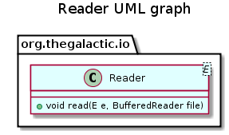

E - The class of elements to read.

public interface Reader<E>
This interface defines a standard way for reading a context.
| Modifier and Type | Method and Description |
|---|---|
void |
read(E e,
BufferedReader file)
Read a context to a file.
|
void read(E e, BufferedReader file) throws IOException
Read a context to a file.
e - an element to readfile - a fileIOException - When an IOException occursCopyright © 2010–2016 The Galactic Organization. All rights reserved.